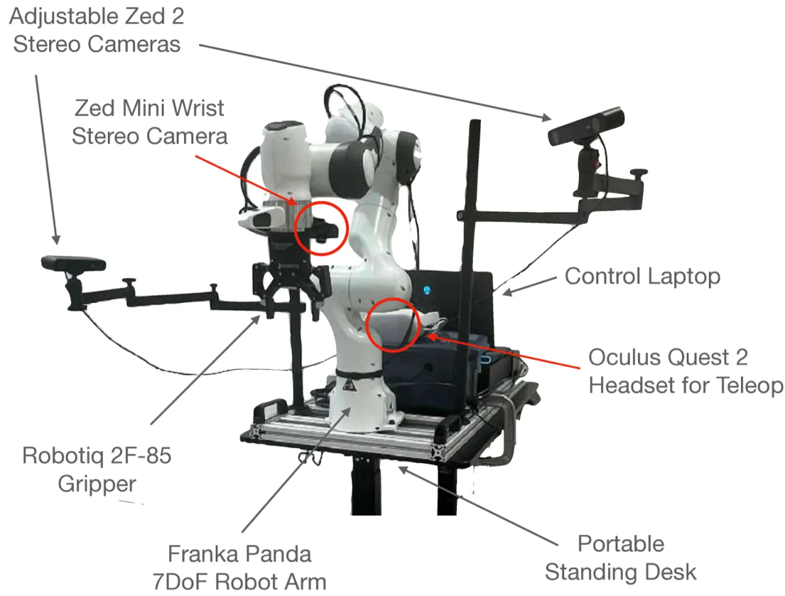
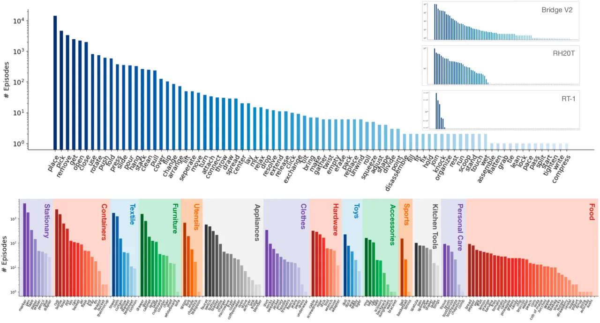
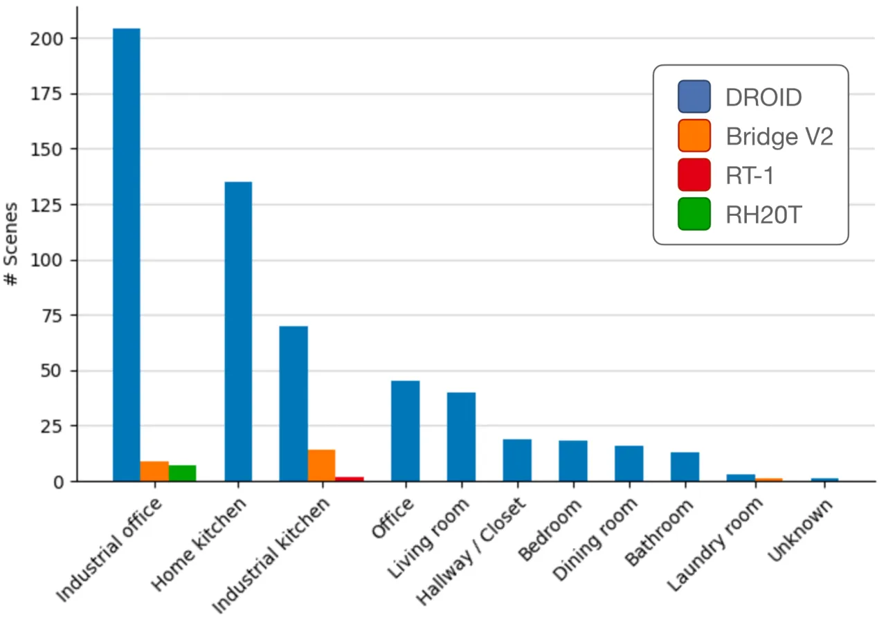
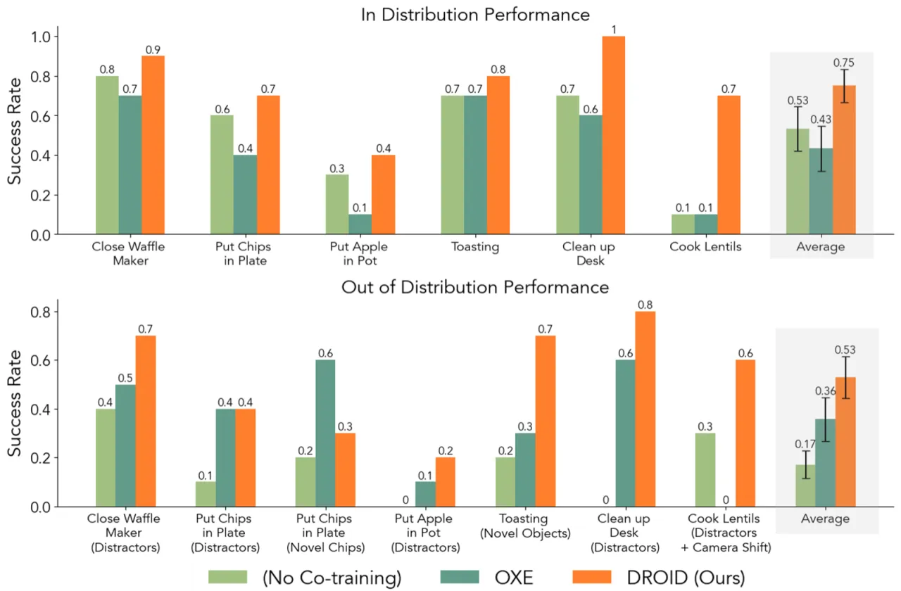
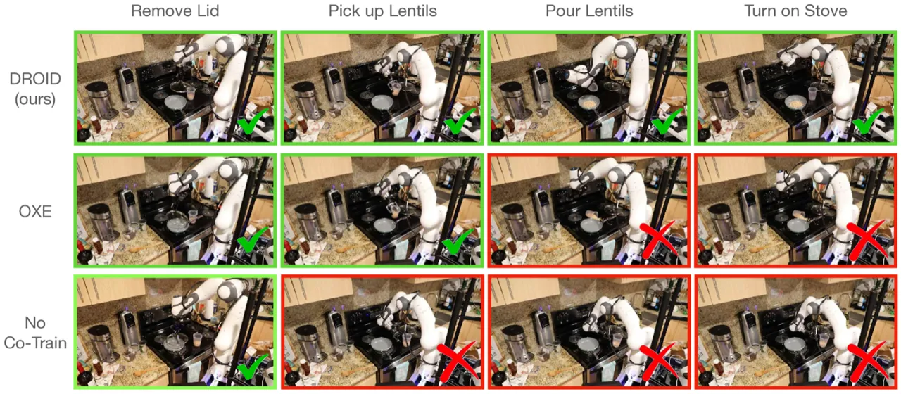
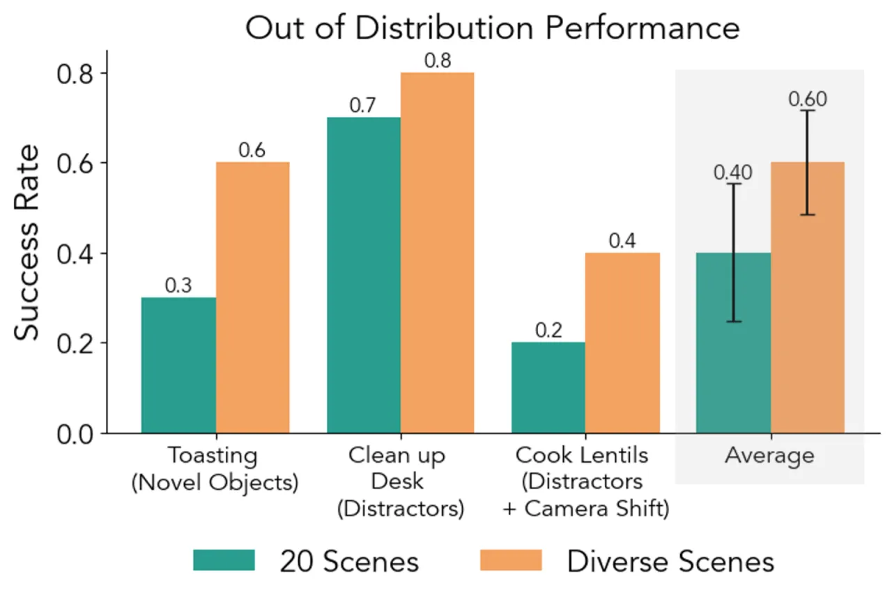

DROID 是一个包含 76,000 条机器人演示轨迹（350 小时）的大规模公开数据集，由来自北美、亚洲和欧洲的 50 名采集者在 564 个真实场景中收集，覆盖 86 类任务。 在此数据集上联合训练的 diffusion policy，分布内成功率相较基线提升 22%，分布外提升 17%。
通才型机器人操作策略的关键瓶颈是数据——现有数据集几乎全部在少数受控实验室环境中采集，场景单一、任务有限，导致策略在新场景下的泛化极差。 如何以可扩展的方式采集真实多样的操作数据，是迈向通用机器人的核心挑战。
"Most existing datasets are mostly trained on data collected in a small number of environments with limited scene and task diversity… collecting robot data remains logistically challenging and expensive outside of controlled lab settings."

DROID 的核心贡献是建立一套可在任意真实环境（办公室、厨房、户外等）快速部署的标准化采集系统，并在全球多个机构同步运行，以规模化方式覆盖真实世界的场景与任务多样性。
每套 DROID 采集站包括：Franka Panda 机械臂（7-DoF）、两个可调角度的 ZED 2 外部立体相机（分辨率 1280×720，15 Hz）、一个腕部 ZED Mini 相机，以及 Oculus Quest 2 头显用于遥操作。 数据在 12 个月内由来自 18 个研究室、13 个机构的 50 名采集者在北美、亚洲和欧洲的 52 栋楼宇中完成，每个场景平均采集约 100 条轨迹（约 20 分钟）。 每条轨迹记录：3 路立体 RGB 视频流、7D 关节位姿/速度、6D 末端执行器位姿与速度、1D 夹爪状态，以及 1–3 条众包自然语言标注。

DROID 刻意要求每个采集者在不同建筑、不同房间布置下工作，并记录场景类型（实验室、厨房、办公室、餐厅等）及相机外参标定矩阵，以支持后续的跨场景泛化研究。数据集共覆盖 564 个唯一场景，远超此前同类数据集（最大约 24–33 个场景）。

为验证数据集价值，作者训练了一个基于 diffusion policy 的通用操作策略：ResNet-50 视觉编码器（ImageNet 预训练）+ 冻结 DistilBERT 语言嵌入 + U-Net 扩散头，生成 16 步动作序列，输出绝对末端执行器平移、旋转与夹爪动作。 训练时采用 50/50 batch mixing：50% 目标任务数据 + 50% DROID 数据联合训练。
作者在 6 个真实机器人操作任务上评估了 DROID co-training 的效果，任务从短时程（如关闭华夫饼机）到长时程（如煮扁豆）不等，并在分布内（in-distribution）和分布外（OOD）两种设定下测试泛化能力。
| 训练数据 | 分布内成功率 | OOD 成功率 |
|---|---|---|
| No Co-training（仅目标任务数据） | — | — |
| OXE Co-training（~300 场景，22 种机器人） | — | — |
| DROID Co-training（564 场景，Franka） | +22%（绝对值，vs. 最优基线） | +17%（绝对值，vs. 最优基线） |
注：论文以平均成功率±标准误差展示，未逐任务列出精确数值，上表数字直接引自论文原文。


作者从完整 DROID 中抽取两个等大小子集（各 7,362 条轨迹）进行消融：

DROID 全部数据均来自 Franka Panda + Robotiq 夹爪平台，而 OXE 等数据集覆盖 22 种机器人形态。这意味着 DROID 训练的策略在跨机器人形态迁移方面的优势尚不明确，泛化范围主要体现在场景和任务层面，而非机器人本体层面。
论文附录 G 明确指出，外参标定参数"may not always be accurate due to checkerboard misalignment, inconsistent lighting, or errors inherent to OpenCV calibration"，这限制了利用精确三维几何信息进行更高层次空间推理的能力。
作者坦承，"how to best make use of such diverse data" 以及 "how can we train policies that perform tasks in new scenes without any in-domain data?" 仍是未解决的开放问题。Co-training 方案（50/50 混合）只是一种基础验证，最优利用方式有待进一步研究。
564 个"唯一场景"采用保守估计方法，若不同研究室将机器人放置于外观相同的实验台，可能被重复计数，导致实际场景多样性略低于标称值。
DROID 硬件套件（双 ZED 2 + ZED Mini + Oculus Quest 2 + Franka Panda）初始部署成本较高，且需要专业人员进行标定，限制了在资源受限机构中的大规模推广。（此点由作者在论文中隐含提及，属 inferred 推断。）